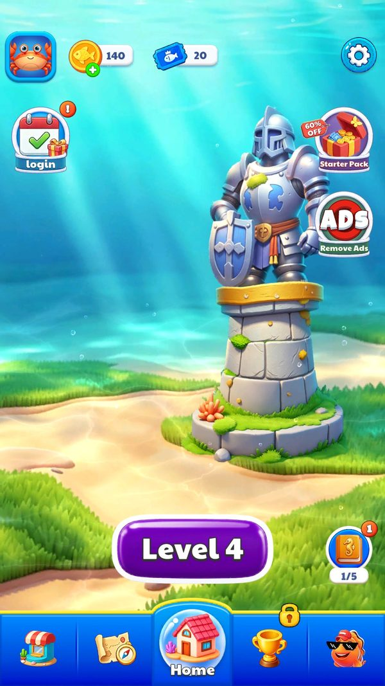

Khung giao diện
Toàn bộ 40 màn hình của game kế thừa từ UIBase và do UIManager quản lý theo ngăn xếp.
Mô tả
- Toàn bộ 40 màn hình của game kế thừa từ UIBase và do UIManager quản lý theo ngăn xếp.
- UIBase quy định vòng đời bốn bước là OnInit, OnShow, OnUpdate và OnRelease, cộng ba thuộc tính điều khiển lớp phủ tối là IsShowBlackMask, IsHandleMaskClick và HandleMaskClick.
- Việc gắn tham chiếu tới node trong prefab không dùng SerializeField thủ công mà qua cặp UIBindGroup và UIBindNode, nên code truy cập theo đường dẫn chuỗi kiểu Root/BtnNext.
- Mở một màn hình: Màn hình hiển thị
- Đóng bằng cách chạm nền tối: Popup đóng nhanh
- Lấy tham chiếu node trong prefab: Panel thao tác được với node
Lưu ý
Ảnh chụp màn hình (3)
Chụp trực tiếp từ game đang chạy: 2026-10-06 · LDPlayer 9 · Android 9 · 1080×1920 · máy ảo PHM110 · v1.4111 (cài từ Google Play ngày 12/09/2026) · tài khoản test JadeGill, đang ở level 4. Bấm ảnh để phóng to, dùng phím ← → để chuyển ảnh.




Mở khóa & điểm vào
Hạ tầng, luôn hoạt động.
Điểm vào:
- Mọi màn hình đều đi qua UIManager
Cách hoạt động
- UIManager mở và đóng panel theo ngăn xếp, quyết định panel nào nhận phím back.
- Mỗi panel nhận tham số qua OnShow với mảng object nên chữ ký thống nhất cho mọi màn hình.
- UIBindNode đánh dấu các node cần tham chiếu trong prefab, UIBindGroup gom chúng lại, và panel lấy ra theo tên đường dẫn; các chuỗi như Root/BtnNext, Root/Spine, Root/Content/Revive/Default/Img5 xuất hiện dày trong pseudo-C chính là cách này.
- UIHandle và UIHandleCustom cài đặt bảy interface sự kiện chuột của Unity gồm pointer down, pointer up, pointer exit, begin drag, drag và end drag, đóng vai trò lớp nhận thao tác dùng chung cho cá và bong bóng.
Luồng chi tiết theo code
UIManager mở và đóng panel theo ngăn xếp, quyết định panel nào nhận phím back. Mỗi panel nhận tham số qua OnShow với mảng object nên chữ ký thống nhất cho mọi màn hình. UIBindNode đánh dấu các node cần tham chiếu trong prefab, UIBindGroup gom chúng lại, và panel lấy ra theo tên đường dẫn; các chuỗi như Root/BtnNext, Root/Spine, Root/Content/Revive/Default/Img5 xuất hiện dày trong pseudo-C chính là cách này. UIHandle và UIHandleCustom cài đặt bảy interface sự kiện chuột của Unity gồm pointer down, pointer up, pointer exit, begin drag, drag và end drag, đóng vai trò lớp nhận thao tác dùng chung cho cá và bong bóng.
Số liệu chính
| Chỉ số | Giá trị | Nguồn |
|---|---|---|
| Số màn hình | 40 lớp có tiền tố UIPanel | dump.cs Assembly-CSharp |
| Vòng đời UIBase | OnInit, OnShow, OnUpdate, OnRelease | class UIBase |
Use case (3)
Bấm vào từng use case để mở. Mở/đóng tất cả
UC-01 Mở một màn hình
Các bước- Nạp prefab qua YooAsset
- Gọi OnInit lần đầu
- Gọi OnShow với tham số
- Đẩy vào ngăn xếp
| Actor | System |
|---|---|
| Trigger | Gọi UIManager mở panel |
| Điều kiện | Prefab có trong bundle |
| Kết quả | Màn hình hiển thị |
| Evidence | UIBase.OnInit; UIBase.OnShow; UIManager |
UC-02 Đóng bằng cách chạm nền tối
Các bước- HandleMaskClick chạy
- Panel đóng
| Actor | Player |
|---|---|
| Trigger | Chạm ra ngoài popup |
| Điều kiện | IsShowBlackMask và IsHandleMaskClick đều true |
| Kết quả | Popup đóng nhanh |
| Quy tắc / số liệu | Panel nào không cho đóng kiểu này sẽ trả IsHandleMaskClick bằng false, ví dụ các popup bán hàng |
| Evidence | UIBase.get_IsShowBlackMask; UIBase.get_IsHandleMaskClick; UIPanelActivityReward.HandleMaskClick |
UC-03 Lấy tham chiếu node trong prefab
Các bước- Tra node theo chuỗi đường dẫn
- Gán vào biến
| Actor | System |
|---|---|
| Trigger | OnInit của panel |
| Điều kiện | Prefab có UIBindGroup |
| Kết quả | Panel thao tác được với node |
| Evidence | UIBindGroup; UIBindNode; chuỗi Root/BtnNext trong UIPanelFail |
Cấu hình (2)
Gộp mọi nguồn: const trong code, JSON mặc định trong Resources, bảng static, storage key, AB test, cờ server.
| Nguồn | Key | Kiểu | Giá trị | Ý nghĩa | Nơi định nghĩa |
|---|---|---|---|---|---|
| code const | Số màn hình | int | 40 lớp có tiền tố UIPanel | Tổng số màn hình của game | dump.cs Assembly-CSharp |
| code const | Vòng đời UIBase | method | OnInit, OnShow, OnUpdate, OnRelease | Chữ ký chung mọi màn hình | class UIBase |
Số liệu đo trên máy
Thanh điều hướng dưới (đo trên máy)
| Tab | Màn hình | Trạng thái ở level 4 |
|---|---|---|
| 1 | Shop (UIPanelShop) | mở |
| 2 | Scene – danh sách khu trưng bày (UIPanelExhibition) | mở |
| 3 | Home (UIPanelHome) | mở |
| 4 | Leaderboard (UIPanelRank) | khoá, "Reach Level 20 to unlock" |
| 5 | Gallery – đồ giám (UIPanelIllustration) | mở |
Giao diện (UI)
| Element | Class | Mục đích |
|---|---|---|
| Quản lý màn hình | UIManager | Ngăn xếp panel |
| Lớp cơ sở | UIBase | Vòng đời và lớp phủ |
| Nhận thao tác | UIHandle | Bảy interface sự kiện chuột |
Chưa đọc được / ghi chú
- Quy tắc ngăn xếp và thứ tự ưu tiên popup nằm trong method bị obfuscate của UIManager
Tính năng liên quan
Phân phối asset qua YooAsset Khởi động & vòng đời app Cơ chế chơi trong màn
Nguồn đã đọc
- features/UIManager.md
- features/UIBase.md
- features/UIHandle.md
- features/UIPanelFail.md